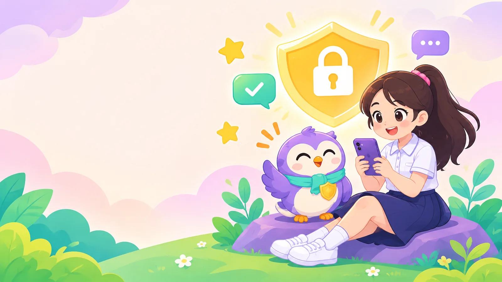
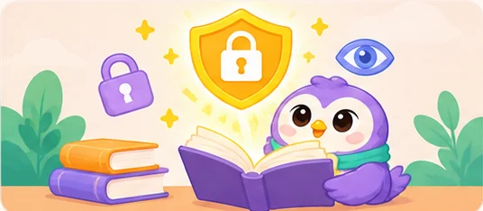
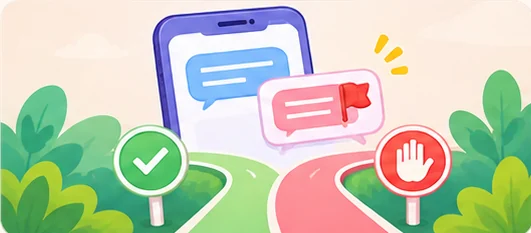
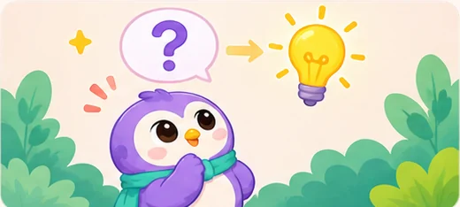
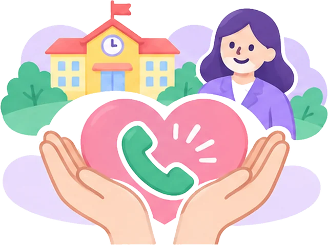

Khiên Số
Nhận ra dấu hiệu nguy hiểm, biết cách từ chối và tìm người giúp khi lên mạng.
Cùng cú An đi qua 6 trạm: học kiến thức, luyện tình huống, hỏi – đáp và sưu tập huy hiệu.
6 trạm của Khiên Số
Học theo thứ tự hoặc chọn phần em thíchBộ sưu tập huy hiệu
Hoàn thành các trạm để mở khóaEm đang gặp chuyện khó nói?
Gọi 111, Tổng đài quốc gia bảo vệ trẻ em, miễn phí và hoạt động cả ngày lẫn đêm. Đó không phải lỗi của em.
Học kiến thức
15 bài ngắn chia thành 3 nhóm: nhận biết nguy cơ, tự bảo vệ, pháp luật và chăm sóc bản thân. Mỗi bài đọc trong khoảng 2 phút.

Tình huống mô phỏng
15 đoạn tin nhắn giống thật. Đọc kỹ rồi chọn cách xử lý. Không có điểm trừ, em có thể chọn lại cho đến khi tìm ra cách an toàn nhất.

Nếu em là người nhận tin nhắn này, em sẽ làm gì?
Hỏi – đáp cùng cú An
Chọn một trong 15 câu hỏi thường gặp, hoặc tự nhập câu hỏi của em. Không cần ghi tên thật hay thông tin cá nhân.

Video ngắn
Hai video hoạt hình ngắn kể lại các tình huống thường gặp và cách xử lý an toàn.
Video đang được chuẩn bị
Cú An và các thầy cô đang hoàn thiện 2 video đầu tiên. Trong lúc chờ, em hãy thử luyện tập với các tình huống mô phỏng nhé.
Đến phần Tình huốngTrắc nghiệm – huy hiệu
Mỗi lượt 10 câu, chọn ngẫu nhiên từ ngân hàng 15 câu, nên mỗi lần làm lại sẽ khác. Đạt từ 8 câu trở lên để nhận huy hiệu Bảo mật giỏi.
Huy hiệu của em
Lưu trên trình duyệt nàyKết nối hỗ trợ
Em không phải tự giải quyết một mình. Dù chuyện gì đã xảy ra, đó không phải lỗi của em, và luôn có người sẵn sàng giúp.

Miễn phí, hoạt động 24/7. Em có thể gọi khi bị đe dọa, bị dụ dỗ, bị xâm hại, hoặc khi thấy một bạn khác gặp nguy hiểm.
Gọi Công an khi có người đang theo dõi, đe dọa trực tiếp hoặc ép em đi đâu đó.
Không phải lỗi của em
Dù em đã lỡ trả lời, lỡ gửi ảnh hay lỡ tin nhầm người, người có lỗi là kẻ lợi dụng em. Em xứng đáng được giúp đỡ và được an toàn.
Khi gặp chuyện trên mạng, em làm gì?
Dừng
Ngừng trả lời ngay. Không gửi thêm ảnh, không chuyển tiền, không hứa hẹn gì.
Chặn
Chặn tài khoản và dùng nút Báo cáo của ứng dụng.
Lưu
Chụp màn hình đoạn chat và tên tài khoản. Không lưu hay chuyển tiếp ảnh nhạy cảm.
Kể
Nói với người lớn em tin cậy hoặc gọi 111. Em sẽ được giúp, không bị trách mắng.
Mở lời thế nào?
Khó nhất là câu đầu tiên. Em có thể nói y nguyên một trong những câu này.
- Với bố mẹ“Con cần kể một chuyện, con hơi sợ. Mẹ nghe con nói hết đã nhé.”
- Với thầy cô“Thưa cô, em có chuyện trên mạng muốn nhờ cô giúp. Cô có thể nói chuyện riêng với em không ạ?”
- Khi chưa dám kể chi tiết“Có người trên mạng làm con thấy khó chịu. Con chưa biết nói thế nào, con cho mẹ xem tin nhắn nhé.”
- Khi giúp bạn“Bạn em đang gặp chuyện trên mạng, em muốn giúp bạn ấy tìm người lớn hỗ trợ.”
Thở cùng cú An
Khi thấy sợ hoặc tim đập nhanh, hãy thở chậm theo vòng tròn trong 1 phút.
Lưu bằng chứng đúng cách
- Ảnh chụp màn hình đoạn chat, thấy rõ ngày giờ.
- Tên tài khoản và đường link trang cá nhân của người đó.
- Đường link bài đăng hoặc nhóm chat có nội dung xấu.
- Lưu, chuyển tiếp ảnh hoặc video nhạy cảm, kể cả để làm bằng chứng.
- Xóa cuộc trò chuyện trước khi người lớn xem.
- Tự nhắn tin đối chất hay đe dọa lại người kia.
Khi ảnh riêng tư bị phát tán
- Kể ngay với bố mẹ hoặc thầy cô. Đừng tự xử lý một mình.
- Báo cáo bài đăng bằng nút Báo cáo, chọn lý do liên quan đến ảnh riêng tư hoặc trẻ em.
- Nhờ người lớn gọi 111 hoặc báo cơ quan công an để được hướng dẫn.
- Có thể dùng công cụ quốc tế Take It Down của tổ chức NCMEC: dành cho người dưới 18 tuổi, ảnh không rời khỏi máy, chỉ một “dấu vân tay số” của ảnh được gửi đi để các nền tảng tham gia (như Facebook, Instagram) tìm và gỡ bản sao. Nên làm cùng người lớn.
Chặn và báo cáo tài khoản
Các ứng dụng đều có nút Chặn và Báo cáo. Tên nút có thể khác nhau một chút giữa các phiên bản.
- Facebook, MessengerMở trang cá nhân hoặc cuộc trò chuyện, bấm dấu ba chấm (…), chọn Báo cáo, sau đó chọn Chặn.
- InstagramVào trang cá nhân người đó, bấm dấu ba chấm ở góc trên, chọn Báo cáo hoặc Chặn.
- TikTokVào trang cá nhân người đó, bấm biểu tượng chia sẻ hoặc dấu ba chấm, chọn Báo cáo hoặc Chặn.
- ZaloMở cuộc trò chuyện, vào phần tùy chọn, chọn Báo xấu, rồi chặn tin nhắn.
- YouTubeBấm dấu ba chấm cạnh video hoặc bình luận, chọn Báo cáo. Có thể chặn người dùng trên kênh của em.
- DiscordBấm vào tên người dùng, chọn Chặn. Bấm giữ hoặc chuột phải vào tin nhắn để Báo cáo.
- Roblox và game khácBấm vào tên người chơi, chọn Báo cáo (Report) hoặc Chặn (Block). Kể với bố mẹ để báo cho nhà phát hành.
Người lớn em tin cậy
Ghi tên 3 người em có thể kể mọi chuyện. Thông tin chỉ lưu trên thiết bị này, không gửi đi đâu.
Hỗ trợ tại trường và địa phương
- Tư vấn học đường
- Nhà trường cập nhật tên, phòng, giờ làm việc
- Trung tâm công tác xã hội
- Nhà trường cập nhật số điện thoại
- Công an phường, xã
- Nhà trường cập nhật số điện thoại
- Khẩn cấp
- 111 (bảo vệ trẻ em) · 113 (công an)
Dành cho người lớn
Phụ huynh và giáo viênPHGóc phụ huynh
Khi con kể chuyện xảy ra trên mạng
Góc phụ huynh
Khi con kể chuyện xảy ra trên mạng- Giữ bình tĩnh, lắng nghe hết. Cảm ơn con vì đã kể. Phản ứng đầu tiên quyết định con có kể tiếp lần sau hay không.
- Không trách mắng, không tịch thu điện thoại ngay. Con dễ hiểu đó là bị phạt và sẽ giấu chuyện về sau.
- Nhắc con rằng đó không phải lỗi của con.
- Cùng con lưu bằng chứng (ảnh chụp đoạn chat, tên tài khoản), không trả tiền, không gửi thêm gì cho người kia.
- Liên hệ 111 hoặc công an khi có đe dọa, tống tiền hay phát tán ảnh. Báo nhà trường nếu liên quan đến bạn học.
- Theo dõi cảm xúc của con trong những tuần sau. Tìm hỗ trợ tâm lý nếu con mất ngủ, sợ đến trường kéo dài.
GVGóc giáo viên
Quy trình tiếp nhận khi học sinh báo cáo
Góc giáo viên
Quy trình tiếp nhận khi học sinh báo cáo- Tiếp nhận: nói chuyện ở nơi riêng tư, lắng nghe, không chất vấn hay đổ lỗi.
- Bảo đảm an toàn trước mắt: xác định học sinh có đang bị đe dọa trực tiếp không. Nếu có, liên hệ 113.
- Ghi nhận: ghi lại lời kể, thời gian. Hướng dẫn lưu bằng chứng; không tự lưu hay chuyển tiếp hình ảnh nhạy cảm.
- Báo cáo: báo Ban giám hiệu và phụ huynh theo quy định của trường; liên hệ 111 để được tư vấn chuyên môn.
- Hỗ trợ tiếp theo: kết nối tư vấn tâm lý học đường, theo dõi học sinh, xử lý trong lớp nếu có bạn học liên quan. Giữ kín thông tin của học sinh.